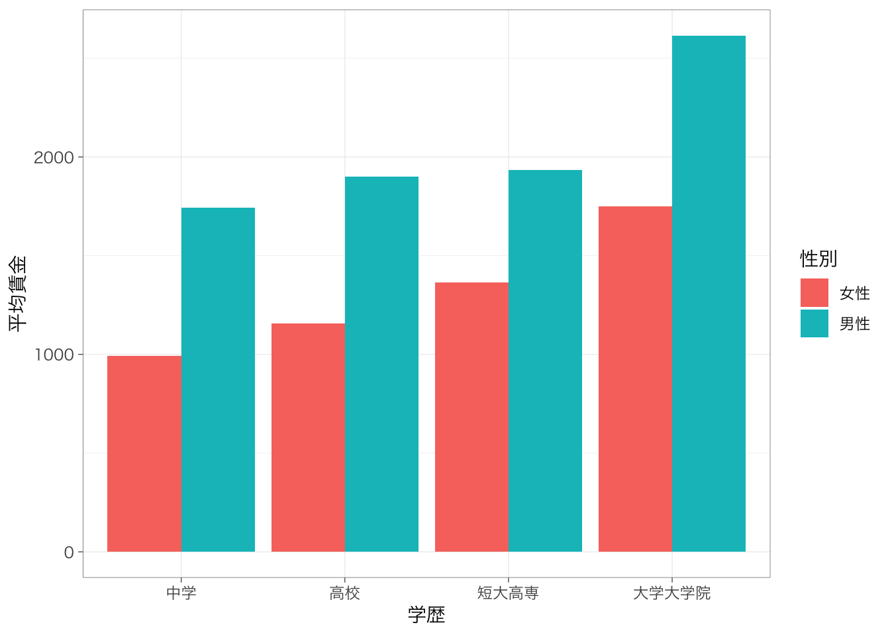
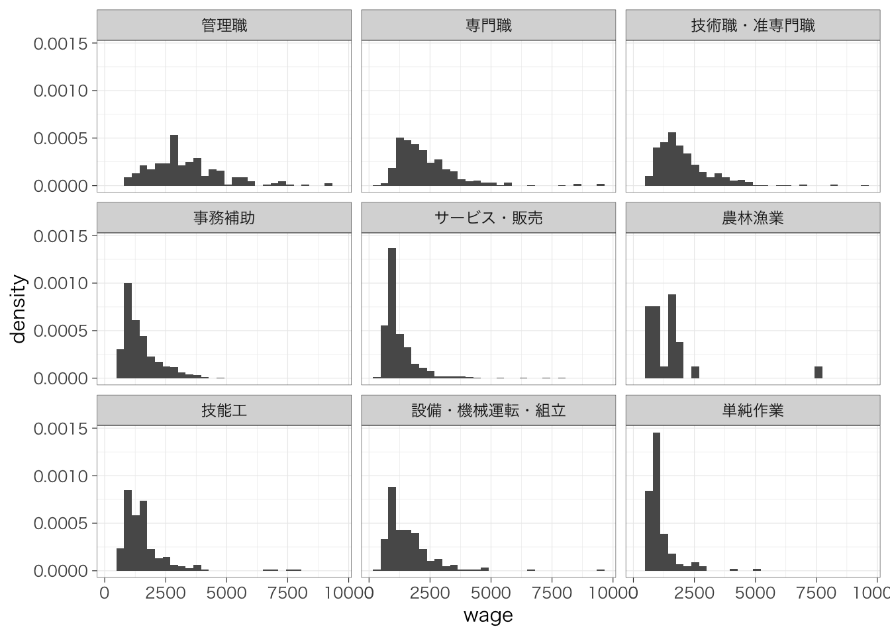
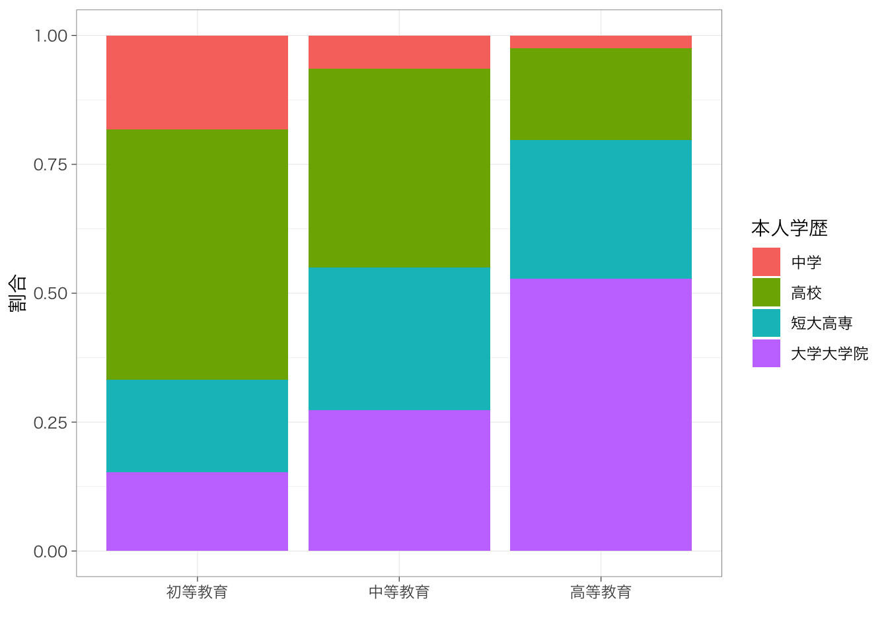

Chapter 6 2変数の集計
本章では、2変数の集計方法を説明する。
内容に入る前に、右上のプロジェクトのボックスの横が、前章で作成したプロジェクトの名前（たとえば、seminar_sociology_r）になっているかどうかを確認しておこう。なっていない場合は、右上のボックスをクリックして、「Open Project…」を選択し、前章で作成したRprojファイル（たとえば、seminar_sociology_r.Rprojといったような名前になっている）を選んで、プロジェクトを切り替えよう。
さらに、これまでの章で説明した以下のパッケージを読み込んだ上で、第4章で作成したデータを読み込んでpiaacというデータフレームに入れていることを前提とする。具体的には、以下のコードを実行しておく必要がある。
library(tidyverse)
library(gtsummary)
library(flextable)
piaac <- read_rds("data/piaac_sample_analytic.rds")加えて、第5章で確認したように、ggplotの設定を変更しておくことで見やすいグラフを作ることができる。ここでは以下のコードを実行している。
Macの場合：
theme_set(theme_bw(
base_family = "HiraginoSans-W3",
base_size = 11,
base_rect_size = 0.2,
base_line_size = 0.2
))Windowsの場合：
theme_set(theme_bw(
base_size = 11,
base_rect_size = 0.2,
base_line_size = 0.2
))6.1 平均値の比較
6.1.1 基本
カテゴリ変数の値ごとに連続変数の値を比較したい。たとえば性別ごとに賃金の平均値を比較したいとする。このようなときには、前章で学んだ連続変数を集計する方法に、以下のようにグループに分けるための命令group_by()を付け加えることで、グループ別の集計を行うことができる。
piaac %>%
group_by(gender) %>% # genderの値ごとに分けると宣言
summarize(mean = mean(wage))## # A tibble: 2 × 2
## gender mean
## <fct> <dbl>
## 1 女性 1339.
## 2 男性 2196.前章で説明したときと同様、集計する変数にNAが含まれていると計算ができず、結果はNAとなる。グループ別に集計する場合はgroup_by()で分ける変数にNAが含まれている可能性も考えないといけない。たとえば、父親学歴parenteducごとに集計してみるとどうだろうか。ここでは、平均値だけではなく標準偏差と人数を合わせてチェックしてみよう。
piaac %>%
group_by(fathereduc) %>%
summarize(mean = mean(wage),
sd = sd(wage),
n = n())## # A tibble: 4 × 4
## fathereduc mean sd n
## <fct> <dbl> <dbl> <int>
## 1 初等教育 1689. 1181. 912
## 2 中等教育 1772. 1157. 1120
## 3 高等教育 1985. 1260. 639
## 4 <NA> 1680. 984. 57このように、group_by()で分ける変数にNAが含まれている場合には、それもグループとみなしたうえで集計を行う。これがそのまま残っているとグラフを作ったりするときに面倒になるので、やはりNAはあらかじめ除外しておくとよい。
piaac %>%
filter(is.na(fathereduc) == FALSE) %>% # is.na(fathereduc)で、fathereducの値がNAならTRUE, NAでないならFALSEを返す
group_by(parenteduc) %>%
summarize(mean = mean(wage),
sd = sd(wage),
n = n())## # A tibble: 3 × 4
## parenteduc mean sd n
## <fct> <dbl> <dbl> <int>
## 1 初等教育 1650. 1206. 670
## 2 中等教育 1773. 1155. 1176
## 3 高等教育 1943. 1227. 8256.1.2 棒グラフによる可視化
平均値の違いを視覚的にみたいときには、棒グラフを作るのがよい。先ほどのようにカテゴリごとに平均値を計算したうえで、geom_col()で棒グラフを作ることができる。
piaac %>%
group_by(gender) %>%
summarize(mean = mean(wage)) %>%
ggplot(aes(x = gender, y = mean)) +
geom_col() +
labs(x = "性別", y = "平均賃金")
6.1.3 複数カテゴリの組み合わせ
複数のカテゴリ変数を組み合わせて平均値を比較したいということもあるだろう。このような場合も、基本は同じ。group_by()の部分に複数の変数を指定することで、カテゴリを組合わせた集計ができる。
piaac %>%
group_by(gender, educ) %>%
summarize(mean = mean(wage),
sd = sd(wage),
n = n())## `summarise()` has grouped output by 'gender'. You can override using the `.groups` argument.## # A tibble: 8 × 5
## # Groups: gender [2]
## gender educ mean sd n
## <fct> <fct> <dbl> <dbl> <int>
## 1 女性 中学 993. 563. 94
## 2 女性 高校 1158. 633. 466
## 3 女性 短大高専 1363. 775. 466
## 4 女性 大学大学院 1749. 921. 258
## 5 男性 中学 1743. 1288. 132
## 6 男性 高校 1900. 1045. 482
## 7 男性 短大高専 1935. 1142. 215
## 8 男性 大学大学院 2615. 1495. 615棒グラフを作ることももちろんできる。いくつかのパターンを示しておく。
meandata <- piaac %>%
group_by(gender, educ) %>%
summarize(mean = mean(wage)) #いったん名前をつけて保存しておく## `summarise()` has grouped output by 'gender'. You can override using the `.groups` argument.学歴で色分けするパターン：
meandata %>%
ggplot(aes(x = gender, y = mean, fill = educ)) + # fillで色分けする変数を指定
geom_col(position = "dodge") + # position = "dodge"とすることで棒を重ねずに表示する
labs(x = "性別", y = "平均賃金", fill = "学歴")
性別で色分けするパターン：
meandata %>%
ggplot(aes(x = educ, y = mean, fill = gender)) +
geom_col(position = "dodge") +
labs(x = "学歴", y = "平均賃金", fill = "性別")
性別でグラフを分割するパターン：
meandata %>%
ggplot(aes(x = educ, y = mean)) +
geom_col() +
labs(x = "学歴", y = "平均賃金") +
facet_wrap(~gender)
6.2 分布の比較
平均値だけではなく、分布そのものを比較することでより全体の違いがわかりやすい事がある。前章ではヒストグラムを使って連続変数の分布をみる方法を紹介した。これをグループ別にそれぞれ書いてみよう。
複数のヒストグラムを重ねるときには、geom_histogram()のなかでposition = "identity"と指定する。また、ヒストグラムが重なると片方が見えなくなってしまうので、alpha = 0.5などと指定することで、透明度をつける。alpha = 1がデフォルトで、0に近づくほど透明度が高くなる。
piaac %>%
ggplot(aes(x = wage, fill = gender)) +
geom_histogram(position = "identity", alpha = 0.5) +
labs(fill = "")## `stat_bin()` using `bins = 30`. Pick better value with `binwidth`.グループ間で人数が異なると少し比較が難しいかもしれない。このような場合は縦軸を度数ではなく密度（density）にするとよい。
piaac %>%
ggplot(aes(x = wage, y = ..density.., fill = gender)) +
geom_histogram(position = "identity", alpha = 0.5) +
labs(fill = "")## `stat_bin()` using `bins = 30`. Pick better value with `binwidth`.
カテゴリの数が2つならいいが、たくさんの場合には見にくくなってしまう。そのような場合にはfacet_wrap()をつかって図を分けるのがよいだろう。
piaac %>%
ggplot(aes(x = wage, y = ..density..)) +
geom_histogram() +
facet_wrap(~occupation)## `stat_bin()` using `bins = 30`. Pick better value with `binwidth`.
6.3 クロス集計表
6.3.1 基本
カテゴリ変数の場合は平均値などを計算することはできないので、度数をみることが有効であった。カテゴリ変数の度数分布をグループ間で比べることも可能である。たとえば、親の学歴（父親と母親のうちどちらか高い方の学歴をとった変数）parenteducによって本人の学歴の分布がどの程度異なるのかを知りたいとする。これは、前章で紹介したwith(table())を使うとできる。
piaac %>%
with(table(parenteduc, educ))## educ
## parenteduc 中学 高校 短大高専 大学大学院
## 初等教育 127 337 125 106
## 中等教育 78 464 332 329
## 高等教育 21 147 224 438このようなときに、カテゴリ変数の分布をグループごとに集計した表を指して、クロス集計表という。 もちろんこれだけだと、どの学歴ではどの職業が多いのかというのは一見してすぐにわからない。そこで、行%を計算することで、より学歴ごとの内訳がわかりやすくなる。
piaac %>%
with(table(parenteduc, educ)) %>%
prop.table(margin = 1)## educ
## parenteduc 中学 高校 短大高専 大学大学院
## 初等教育 0.18273381 0.48489209 0.17985612 0.15251799
## 中等教育 0.06483791 0.38570241 0.27597672 0.27348296
## 高等教育 0.02530120 0.17710843 0.26987952 0.52771084親の学歴が高いほど、本人の学歴も高いことがわかる。
6.3.2 カイ2乗検定（発展）
クロス集計表を作成したときにみられた関連（たとえば今回の場合であれば、親の学歴が高いほど子どもの学歴も高い傾向がある = 親の学歴と子どもの学歴に関連がある）がたんなる偶然で生じたものではなく、母集団においても確かに関連があるかどうかを確かめたいとする。これを統計的検定という。
クロス集計表の場合には、カイ二乗検定という方法を用いて検定を行う。カイ二乗検定では、（もし親の学歴と子どもの学歴の間にまったく関連がなかったとしたら得られるであろう）架空のクロス集計表と比べて、実際のクロス集計表で得られた結果が大きくかけ離れていたのであれば、やはり母集団においても親の学歴と子どもの学歴の間には関連があるのだろう（親の学歴と子どもの学歴の間に関連がないという帰無仮説を棄却する）、というふうに考えて関連の有無を判定する。
with(table())で作成したテーブルに対してchisq.test()を実行することでカイ二乗検定を行うことができる。
piaac %>%
with(table(parenteduc, educ)) %>%
chisq.test()##
## Pearson's Chi-squared test
##
## data: .
## X-squared = 432.95, df = 6, p-value < 2.2e-16「p-value」というところをみると、非常に低い値を示していることがわかる10。これはつまり、もし親の学歴と子どもの学歴の間に全く関連がなかったとしたら、今回のデータのようなクロス集計表が（偶然に）得られる確率は極めて低い、ということを表している。この結果から、「親の学歴と子どもの学歴には関連がない」という帰無仮説を棄却でき、たしかに、親の学歴と子どもの学歴には関連があるのだと主張することができる。
6.3.3 きれいなクロス表をつくる - gtsummary::tbl_cross()
とはいえ、このクロス表はあまり見やすいものとはいえない。度数（人数）と行%がいずれも表示され、かつ、周辺度数（行合計と列合計）を表示するグラフは作れないだろうか。
このようなときに、gtsummaryパッケージに含まれているgtsummary::tbl_cross()関数が役に立つ。
library(gtsummary)行%を表記する場合は、tbl_cross(data = xx, row = 行にする変数, column = 列にする変数, percent = "row")と書く。
piaac %>%
tbl_cross(parenteduc, educ, percent = "row")| Characteristic | educ | Total | |||
|---|---|---|---|---|---|
| 中学 | 高校 | 短大高専 | 大学大学院 | ||
| parenteduc | |||||
| 初等教育 | 127 (18%) | 337 (48%) | 125 (18%) | 106 (15%) | 695 (100%) |
| 中等教育 | 78 (6.5%) | 464 (39%) | 332 (28%) | 329 (27%) | 1,203 (100%) |
| 高等教育 | 21 (2.5%) | 147 (18%) | 224 (27%) | 438 (53%) | 830 (100%) |
| Total | 226 (8.3%) | 948 (35%) | 681 (25%) | 873 (32%) | 2,728 (100%) |
値が度数、括弧内が行%を意味している。with(table())のときと違って、もし変数にNAが含まれている場合には表から自動的に除外されず、「Unknown」という行や列が追加される。
このクロス集計表もいくつかの点で改良の余地がある。以下の3つの点で修正をしてみよう。
- parenteduc, educがそれぞれ何を指しているのか、日本語の名前をつけたい：
label = list(x ~ "名前") - 行および列の合計が”Total”と記載されているが、これを「合計」という日本語の名前にしたい：
margin_text = "合計" - 左上に書かれている「Characteristics」というのは特に必要がないので削除したい：
tbl_crossのコマンドの後ろに%>%でつないでmodify_header(label ~ "")
piaac %>%
tbl_cross(parenteduc, educ,
percent = "row",
label = list(parenteduc ~ "親学歴", educ ~ "本人学歴"),
margin_text = "合計") %>%
modify_header(label ~ "")| 本人学歴 | 合計 | ||||
|---|---|---|---|---|---|
| 中学 | 高校 | 短大高専 | 大学大学院 | ||
| 親学歴 | |||||
| 初等教育 | 127 (18%) | 337 (48%) | 125 (18%) | 106 (15%) | 695 (100%) |
| 中等教育 | 78 (6.5%) | 464 (39%) | 332 (28%) | 329 (27%) | 1,203 (100%) |
| 高等教育 | 21 (2.5%) | 147 (18%) | 224 (27%) | 438 (53%) | 830 (100%) |
| 合計 | 226 (8.3%) | 948 (35%) | 681 (25%) | 873 (32%) | 2,728 (100%) |
これならばそのまま論文に掲載できるくらいきれいな図になっている。もちろんこれもwordファイルに書き出すことができる。この方法については本章最後に紹介する。
6.4 クロス集計表を図示する
クロス集計表は数値が多いので、図で表されているとわかりやすいかもしれない。このようなときも、前章で説明したように、with(table())で作成した数値をデータフレームとすることで、比較的簡単に図をつくることができる。
table <- piaac %>%
with(table(parenteduc, educ)) %>%
prop.table(margin = 1) %>%
as.data.frame() # データフレーム形式に変換
table #中身を確認。## parenteduc educ Freq
## 1 初等教育 中学 0.18273381
## 2 中等教育 中学 0.06483791
## 3 高等教育 中学 0.02530120
## 4 初等教育 高校 0.48489209
## 5 中等教育 高校 0.38570241
## 6 高等教育 高校 0.17710843
## 7 初等教育 短大高専 0.17985612
## 8 中等教育 短大高専 0.27597672
## 9 高等教育 短大高専 0.26987952
## 10 初等教育 大学大学院 0.15251799
## 11 中等教育 大学大学院 0.27348296
## 12 高等教育 大学大学院 0.52771084table %>%
ggplot(aes(y = Freq, x = parenteduc, fill = educ)) +
geom_col() +
labs(x = "", y = "割合", fill = "本人学歴")
積み上げ棒グラフは各カテゴリの大きさがわかりにくいので、ばらして始点をそろえるほうが見やすいかもしれない。
table %>%
ggplot(aes(y = Freq, x = parenteduc, fill = educ)) +
geom_col(position = "dodge") +
labs(x = "", y = "割合", fill = "本人学歴") 
6.5 散布図
6.5.1 散布図をみる
連続変数どうしの関係をみたいときには、散布図を使う。散布図を書くときには、geom_point()を使う。サンプルサイズが大きい場合には点がかぶってしまうので、かぶっている箇所がわかりやすいよう、透明度を指定するか、点の形状を変えると良い。shape = 1というオプションをつけると、白抜きの点にできる11。
piaac %>%
ggplot(aes(x = age, y = wage)) +
geom_point(shape = 1)
散布図の傾向を表すような直線を引くと、関係がよりわかりやすいだろう。
piaac %>%
ggplot(aes(x = age, y = wage)) +
geom_point(shape = 1) +
geom_smooth(method = "lm", se = FALSE)## `geom_smooth()` using formula 'y ~ x'
geom_smooth()というのは、2つの変数の関連の傾向を示す線を描く関数。カッコ内で、どのような線を引くのかを指定する。
method = "lm"という部分は、回帰分析により推定される直線を引くという指定を表している。何も書かない場合には、method = "loess"（局所回帰）による線が描かれる。se = FALSEの部分では、係数の標準誤差から計算される95%信頼区間を書かないという指定を表している。何も書かない場合には、信頼区間がプロットされる。
6.5.2 カテゴリごとに散布図を分ける
たとえば男性と女性で別々に散布図を書きたいということがあるだろう。このような場合には、facet_wrap()を使うか、color =を指定する。
piaac %>%
ggplot(aes(x = age, y = wage)) +
geom_point(shape = 1) +
geom_smooth(method = "lm", se = FALSE) +
facet_wrap(~gender)## `geom_smooth()` using formula 'y ~ x'
piaac %>%
ggplot(aes(x = age, y = wage, color = gender)) +
geom_point(shape = 1) +
geom_smooth(method = "lm", se = FALSE) ## `geom_smooth()` using formula 'y ~ x'
6.5.3 相関係数
相関係数は以下のように定義される：
\[ r = \frac{\textrm{Cov}(x, y)}{\textrm{Sd}(x)\textrm{Sd}(y)} = \frac{\frac{1}{N} \sum_{i = 1}^N(x_i - \overline{x})(y_i - \overline{y})}{\sqrt{\frac{1}{N} \sum_{i = 1}^N(x_i - \overline{x})^2}\sqrt{\frac{1}{N} \sum_{i = 1}^N(y_i - \overline{y})^2}} \]
相関係数はsummarize()コマンドで計算できる。NAが含まれている場合にはやはり計算結果もNAになってしまうので、前もってNAの行がないかどうかチェックしておく。
piaac %>%
filter(is.na(wage) == FALSE) %>%
summarize(cor = cor(age, wage))## # A tibble: 1 × 1
## cor
## <dbl>
## 1 0.1356.6 2変数集計のときのくふう
6.6.1 値が粗い連続変数を扱う
値が粗い連続変数を扱う場合、散布図があまり可視化の役に立たないことがある。例えば、健康状態について尋ねた質問の選択肢に次のように値を与え、高いほど健康であることを示すようにした変数（health）があるとする。
| 選択肢 | 調査票上の番号 | 数値化例 |
|---|---|---|
| 極めて優れている | 1 | 5 |
| 大変良い | 2 | 4 |
| 良い | 3 | 3 |
| どちらともいえない | 4 | 2 |
| 悪い | 5 | 1 |
年齢が高いほど健康状態が悪くなるというのはよく知られているので、年齢を横軸、健康状態を縦軸にとった散布図を書くと右下に点が集まるはずだと思ったが、散布図を書いてみると、点が重なってしまってなんだかよくわからない散布図になってしまう。
piaac %>%
ggplot(aes(x = age, y = health)) +
geom_point(alpha = 0.2)
このような場合はどうしたらよいだろうか？解決策の1つは、平均値の比較のときのように、横軸の変数の値ごとに健康状態の平均値を計算し、それをプロットするという方法がある。
piaac %>%
group_by(age) %>%
summarize(mean = mean(health)) %>%
ggplot(aes(x = age, y = mean)) +
geom_point()
ただ、この図では人数が少ない年齢層も多い年齢層も同じ大きさの点で描かれてしまっていることが少し不満かもしれない。点の大きさを考慮したい場合には、バブル・プロットを使う。aestheticsのところでsize =を指定することで、点の大きさを変えることができる。ただしその際、scale_size_area(max_size = 5)などというふうに円の面積に関するコマンドを含めないと円の大きさと人数が対応しなくなってしまうため、注意が必要。
piaac %>%
group_by(age) %>%
summarize(mean = mean(health),
n = n()) %>%
ggplot(aes(x = age, y = mean, size = n)) +
geom_point(shape = 1) +
scale_size_area(max_size = 5)
6.6.2 カテゴリが多いクロス集計表を扱う
学歴によって就いている職業の分布がどのように異なっているかを知りたいとする。このような場合にはクロス集計表を作る。
piaac %>%
tbl_cross(educ, occupation, percent = "row")| Characteristic | occupation | Total | ||||||||
|---|---|---|---|---|---|---|---|---|---|---|
| 管理職 | 専門職 | 技術職・准専門職 | 事務補助 | サービス・販売 | 農林漁業 | 技能工 | 設備・機械運転・組立 | 単純作業 | ||
| educ | ||||||||||
| 中学 | 7 (3.1%) | 2 (0.9%) | 12 (5.3%) | 18 (8.0%) | 48 (21%) | 9 (4.0%) | 52 (23%) | 40 (18%) | 38 (17%) | 226 (100%) |
| 高校 | 48 (5.1%) | 27 (2.8%) | 114 (12%) | 177 (19%) | 266 (28%) | 7 (0.7%) | 120 (13%) | 125 (13%) | 64 (6.8%) | 948 (100%) |
| 短大高専 | 31 (4.6%) | 123 (18%) | 114 (17%) | 121 (18%) | 173 (25%) | 4 (0.6%) | 63 (9.3%) | 24 (3.5%) | 28 (4.1%) | 681 (100%) |
| 大学大学院 | 133 (15%) | 267 (31%) | 199 (23%) | 123 (14%) | 89 (10%) | 5 (0.6%) | 30 (3.4%) | 18 (2.1%) | 9 (1.0%) | 873 (100%) |
| Total | 219 (8.0%) | 419 (15%) | 439 (16%) | 439 (16%) | 576 (21%) | 25 (0.9%) | 265 (9.7%) | 207 (7.6%) | 139 (5.1%) | 2,728 (100%) |
この表はやや横に大きく、数値も多いため、見にくい表になってしまっているかもしれない。実際、これを積み上げ棒グラフにすると、お世辞にもあまり見やすいとはいえないグラフができあがる。
table <- piaac %>%
with(table(educ, occupation)) %>%
prop.table(margin = 1) %>%
as.data.frame() # データフレーム形式に変換
table %>%
ggplot(aes(x = educ, y = Freq, fill = occupation)) +
geom_col() +
labs(x = "", y = "", fill = "") 
そこで、学歴ごとにグラフをわけて、職業の分布を書くという方法がある。facet_wrap()を使うことで、グラフを分割することができる。
table %>%
ggplot(aes(y = Freq, x = occupation)) +
geom_col() +
facet_wrap(~educ) +
labs(x = "", y = "割合") +
theme(axis.text.x = element_text(angle = 45, hjust = 1))
もう一つの方法は、職業ごとにグラフをわけて、各学歴において当該職業に就いている人の割合を示すという方法である。
table %>%
ggplot(aes(y = Freq, x = educ)) +
geom_col() +
facet_wrap(~occupation) +
labs(x = "", y = "割合") +
theme(axis.text.x = element_text(angle = 45, hjust = 1))
どのように図示するかは、自分がどれだと文章を書きやすいか（何を伝えたいのか）によって決める。
このようにカテゴリが多い場合には、そもそもカテゴリをまとめて簡単にするという方法が考えられる。くわしくは、「カテゴリをまとめる」を参照のこと。
6.7 結果をファイルに書き出す
6.7.1 ggplotで作成した図を書き出す
前章の「結果をファイルに書き出す」を参照。
6.7.2 クロス集計表をwordファイルに書き出す
これも基本的な方法は前章の「記述統計の一覧表をwordに書き出す」と同じ。この章ではすでに冒頭で読み込んでおいたが、flextableパッケージを読み込んでおく。
そのうえで、先ほど作成したグループ別の記述統計量の表をwordファイルに書き出したいときには、以下のように%>%演算子でつないで、as_flex_table() %>% save_as_docs(path = "xxx.docx")というコマンドを追加する。
piaac %>%
tbl_cross(parenteduc, educ,
percent = "row",
label = list(parenteduc ~ "親学歴", educ ~ "本人学歴"),
margin_text = "合計") %>%
modify_header(label ~ "") %>%
as_flex_table() %>%
save_as_docx(path = "results/tbl_cross.docx")